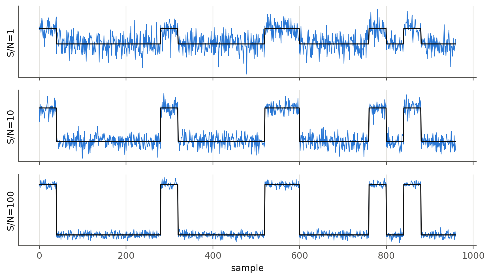
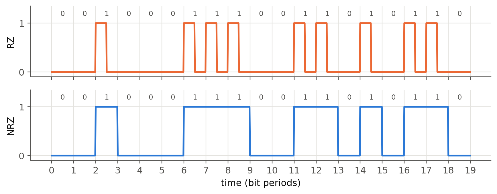
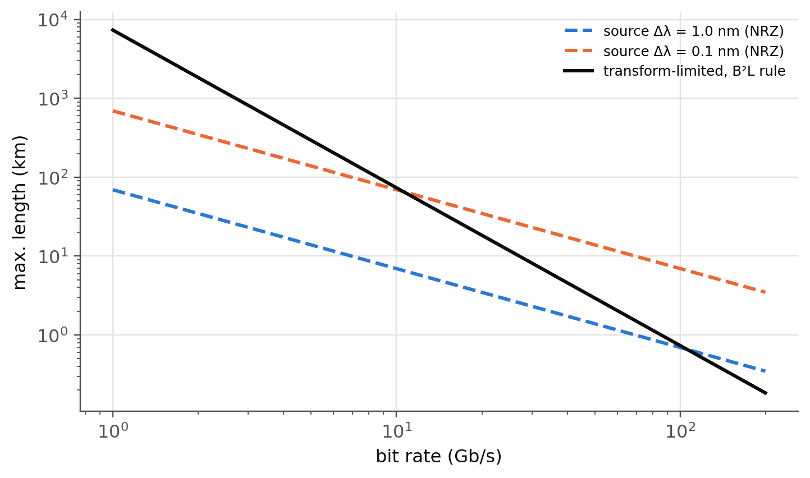
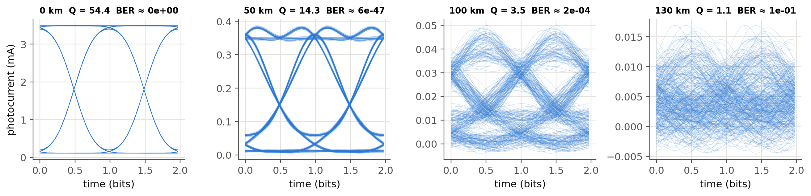
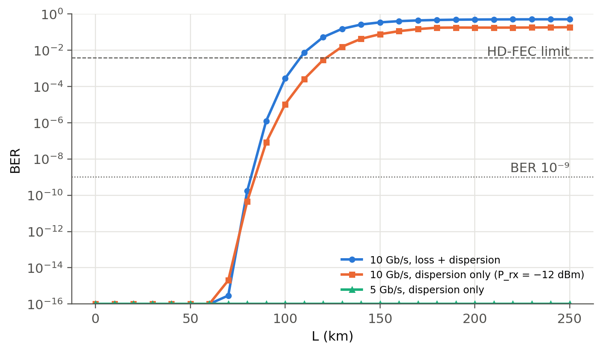
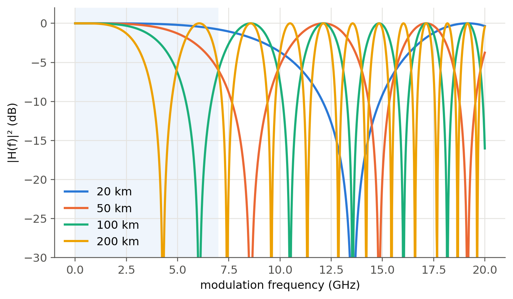

6 Bit rate, bandwidth and capacity
 Run this chapter’s code in Google Colab (no installation).
Run this chapter’s code in Google Colab (no installation).
Slides 96–121. Dispersion stretches each bit. When neighbouring bits overlap too much, the receiver can no longer tell a “1” from a “0”: this is intersymbol interference (ISI). Noise and attenuation then decide how much overlap is tolerable. This chapter connects the fiber physics to the bit error rate.
6.1 Signals, spectra and limits (slides 97–105)
Nyquist: a noiseless channel of bandwidth \(B\) carries at most \(2B\) binary symbols per second (more with multi-level symbols). Shannon: with noise,
\[ C=B\log_2\left(1+\frac{S}{N}\right). \]
With the defaults you get the slide 104 example (31.9 kb/s on a 3.2 kHz line at 30 dB). For a single C-band channel (\(B\approx50\) GHz, \(S/N\approx20\) dB), Shannon allows about 330 Gb/s per polarisation. Commercial coherent transceivers now operate within a few dB of this limit.
Show the Python
rng = np.random.default_rng(0)
bits = fl.prbs(7, 24)
x = np.repeat(bits, 40).astype(float)
fig, axs = plt.subplots(3, 1, figsize=(8, 4.6), sharex=True)
for ax, snr in zip(axs, [1, 10, 100]):
noise = rng.normal(0, np.sqrt(np.mean(x**2) / snr), x.size)
ax.plot(x + noise, color=fl.PALETTE[0], lw=0.8); ax.plot(x, color=fl.INK, lw=1.2)
ax.set_ylabel(f"S/N={snr}"); ax.set_yticks([])
axs[-1].set_xlabel("sample"); plt.tight_layout(); plt.show()
6.2 Line codes: RZ and NRZ (slides 96, 120)
Show the Python
bits = np.array([0, 0, 1, 0, 0, 0, 1, 1, 1, 0, 0, 1, 1, 0, 1, 0, 1, 1, 0])
sps = 50
t = np.arange(len(bits) * sps) / sps
nrz = np.repeat(bits, sps)
rz = nrz * (np.tile(np.arange(sps), len(bits)) < sps // 2)
fig, axs = plt.subplots(2, 1, figsize=(8, 3.2), sharex=True)
axs[0].plot(t, rz, color=fl.PALETTE[1]); axs[0].set_ylabel("RZ")
axs[1].plot(t, nrz, color=fl.PALETTE[0]); axs[1].set_ylabel("NRZ")
for ax in axs:
ax.set_yticks([0, 1]); ax.set_xticks(range(len(bits) + 1))
for i, b in enumerate(bits): ax.text(i + .5, 1.15, str(b), ha="center", fontsize=8, color=fl.INK2)
ax.set_ylim(-0.1, 1.35)
axs[1].set_xlabel("time (bit periods)"); plt.tight_layout(); plt.show()
6.3 Dispersion-limited bit rate (slides 115–121)
For a Gaussian output pulse with rms width \(\sigma\) (\(\Delta\tau_{1/2}=2.355\sigma\), i.e. \(\sigma\approx0.425\Delta\tau_{1/2}\)), allowing the overlap shown on slide 116:
\[ B_\text{RZ}\approx\frac{0.25}{\sigma}=\frac{0.59}{\Delta\tau_{1/2}},\qquad B_\text{NRZ}\approx 2B_\text{RZ}\ (\text{slide 96}), \qquad f_\text{op}\approx0.75B,\quad f_\text{el}\approx0.70f_\text{op}. \]
Show the Python
D, dl, L = 8, 2, 10 # ps/nm/km, nm, km
t12_per_km = D * dl # ps/km
BL = 0.59 / (t12_per_km * 1e-12) # b/s·km
B = BL / L
print(f"Slide 121: Δτ½/L = {t12_per_km} ps/km → BL = {BL/1e9:.1f} Gb/s·km; "
f"for 10 km B = {B/1e9:.2f} Gb/s, f_op = {0.75*B/1e9:.2f} GHz, f_el = {0.7*0.75*B/1e9:.2f} GHz")Slide 121: Δτ½/L = 16 ps/km → BL = 36.9 Gb/s·km; for 10 km B = 3.69 Gb/s, f_op = 2.77 GHz, f_el = 1.94 GHz6.3.1 Two regimes: source linewidth vs. signal bandwidth (new)
The rule \(\Delta\tau=|D|L\Delta\lambda\) assumes the source is broad (\(\Delta\lambda\) fixed by the laser). Modern DFB lasers are so narrow that the spectrum is set by the modulation itself, \(\Delta\lambda\approx\lambda^2B/c\). Then \(\Delta\tau\approx|D|L\lambda^2B/c\), and requiring \(\Delta\tau\lesssim1/B\) (one bit slot) gives the famous
\[ B^2L\lesssim\frac{c}{|D|\lambda^2}\quad\Rightarrow\quad\text{10 Gb/s: } \sim\!70\text{ km},\quad\text{40 Gb/s: } \sim\!5\text{ km at 17 ps/nm/km}. \]
Doubling the bit rate divides the reach by four.
Show the Python
Bs = np.logspace(9, 11.3, 100)
fig, ax = plt.subplots()
for k, dl in enumerate([1.0, 0.1]):
ax.loglog(Bs / 1e9, 0.59 / (17e-12 * dl) / Bs * 2, "--", color=fl.PALETTE[k], label=f"source Δλ = {dl} nm (NRZ)")
ax.loglog(Bs / 1e9, c0 / (17 * PS * (1.55e-6) ** 2 * Bs**2) / 1e3, color=fl.INK, label="transform-limited, B²L rule")
ax.set_xlabel("bit rate (Gb/s)"); ax.set_ylabel("max. length (km)"); ax.legend(fontsize=8)
plt.show()
6.4 Simulating a real link (slides 72–73)
Now we put everything together in a minimal intensity-modulation / direct-detection (IM/DD) simulator, fl.imdd_link (about 40 lines of numpy):
- PRBS bits → NRZ drive with finite rise time and extinction ratio,
- chirp-free optical field \(E=\sqrt{P(t)}\),
- fiber: \(\tilde E(\omega,L)=\tilde E(\omega,0)\,e^{j\beta_2\omega^2L/2}\,10^{-\alpha L/20}\), with \(\beta_2=-D\lambda^2/2\pi c\),
- PIN photodiode \(I=\mathcal R|E|^2\) plus shot and thermal noise, then an electrical filter of bandwidth \(0.7B\),
- sampling, \(Q=(\mu_1-\mu_0)/(\sigma_1+\sigma_0)\) and \(\text{BER}=\tfrac12\operatorname{erfc}(Q/\sqrt2)\).
Parameters of slide 73: 10 Gb/s, 3 dBm launch, NRZ, D = 17 ps/nm/km, 0.2 dB/km, no amplifier.
Show the Python
bits = fl.prbs(9, 2000)
sps = 32
fig, axs = plt.subplots(1, 4, figsize=(12, 3), sharey=False)
for ax, L in zip(axs, [0, 50, 100, 130]):
t, Ptx, I = fl.imdd_link(bits, L_km=L, sps=sps)
Q, ber, ph = fl.eye_metrics(I, bits, sps)
seg = 2 * sps
start = ph # eye opening centred at t = 1 bit
for k in range(20, 400):
s = I[start + k * sps: start + k * sps + seg]
if len(s) == seg: ax.plot(np.arange(seg) / sps, s * 1e3, color=fl.PALETTE[0], lw=0.4, alpha=0.25)
ax.set_title(f"{L} km Q = {Q:.1f} BER ≈ {ber:.0e}", fontsize=9)
ax.set_xlabel("time (bits)")
axs[0].set_ylabel("photocurrent (mA)")
plt.tight_layout(); plt.show()
6.4.1 Separating loss and dispersion
Show the Python
Ls = np.arange(0, 251, 10)
def ber_vs_L(**kw):
out = []
for L in Ls:
_, _, I = fl.imdd_link(bits, L_km=L, sps=16, **kw)
out.append(max(fl.eye_metrics(I, bits, 16)[1], 1e-16))
return np.array(out)
fig, ax = plt.subplots()
ax.semilogy(Ls, ber_vs_L(), "o-", ms=4, label="10 Gb/s, loss + dispersion")
ax.semilogy(Ls, ber_vs_L(alpha_dB_km=0.0, P_launch_dBm=-12), "s-", ms=4, label="10 Gb/s, dispersion only (P_rx = −12 dBm)")
ax.semilogy(Ls, ber_vs_L(alpha_dB_km=0.0, P_launch_dBm=-12, Rb=5e9), "^-", ms=4, label="5 Gb/s, dispersion only")
ax.axhline(1e-9, color=fl.INK2, lw=0.8, ls=":"); ax.text(250, 2e-9, "BER 10⁻⁹", ha="right", color=fl.INK2)
ax.axhline(3.8e-3, color=fl.INK2, lw=0.8, ls="--"); ax.text(250, 5e-3, "HD-FEC limit", ha="right", color=fl.INK2)
ax.set_ylim(1e-16, 1); ax.set_xlabel("L (km)"); ax.set_ylabel("BER"); ax.legend(fontsize=8)
plt.show()
6.4.2 Why IM/DD and dispersion don’t mix: power fading (new)
Square-law detection of a chirp-free, dispersed signal acts as a filter on the intensity: \(|H(f)|=|\cos(2\pi^2\beta_2Lf^2)|\). Its first null is at \(f_1=1/\sqrt{4\pi|\beta_2|L}\). Once \(f_1\) falls inside the signal band, whole frequency components disappear and no amount of power will bring them back.
Show the Python
f = np.linspace(0, 20e9, 800)
b2 = -17 * PS * (1.55e-6) ** 2 / (2 * np.pi * c0)
fig, ax = plt.subplots()
ax.axvspan(0, 7, color=fl.PALETTE[0], alpha=0.07, lw=0)
for k, L in enumerate([20, 50, 100, 200]):
ax.plot(f / 1e9, 20 * np.log10(np.abs(np.cos(2 * np.pi**2 * b2 * L * 1e3 * f**2)) + 1e-6), color=fl.PALETTE[k], label=f"{L} km")
ax.set_ylim(-30, 2); ax.set_xlabel("modulation frequency (GHz)"); ax.set_ylabel("|H(f)|² (dB)"); ax.legend()
plt.show()
for L in [50, 100, 200]:
print(f"L = {L} km: first null at {1/np.sqrt(4*np.pi*abs(b2)*L*1e3)/1e9:.1f} GHz")
L = 50 km: first null at 8.6 GHz
L = 100 km: first null at 6.1 GHz
L = 200 km: first null at 4.3 GHz6.5 Live link simulator (runs in your browser)
The same IM/DD model, written in JavaScript, runs in real time. Change the distance, bit rate or launch power and watch the eye.
TipThings to try
- Set D to −17. Does the eye care about the sign? (Not for a chirp-free source. With a chirped, directly modulated laser it would.)
- Find the maximum distance at 40 Gb/s. Then switch on the preamplifier. Which effect limits the link now?
- Compare RZ and NRZ at 100 km.
6.6 Going further with OptiCommPy
The notebook opticomm.ipynb uses OptiCommPy, a full research-grade library. Since version 0.10 the pulse-shaping API takes a parameters object, which is why some cells of the original notebook fail. The corrected minimal version below gives the same Q as our simulator.
Show the Python
from optic.models.devices import mzm, photodiode
from optic.models.channels import linearFiberChannel
from optic.comm.modulation import modulateGray
from optic.comm.metrics import bert
from optic.dsp.core import firFilter, pulseShape, upsample, pnorm
from optic.utils import parameters, dBm2W
SpS, Rs = 16, 10e9
pp = parameters(); pp.pulseType, pp.SpS = "nrz", SpS # new API (>= 0.10)
pulse = pulseShape(pp); pulse /= abs(pulse).max()
pM = parameters(); pM.Vpi, pM.Vb = 2, -1
pC = parameters(); pC.alpha, pC.D, pC.Fc, pC.Fs = 0.2, 16, 193.1e12, SpS * Rs
pP = parameters(); pP.ideal, pP.B, pP.Fs, pP.seed = False, Rs, SpS * Rs, 1
np.random.seed(123); bitsTx = np.random.randint(2, size=20000)
sigTx = firFilter(pulse, upsample(pnorm(modulateGray(bitsTx, 2, "pam")), SpS))
for L in [0, 50, 100]:
pC.L = L
I = photodiode(linearFiberChannel(mzm(np.sqrt(dBm2W(3)), sigTx, pM), pC), pP)
BER, Q = bert(I[0::SpS] / np.std(I), bitsTx)
print(f"L = {L:3d} km: Q = {Q:5.2f}, BER = {BER:.1e}")L = 0 km: Q = 17.98, BER = 0.0e+00
L = 50 km: Q = 10.94, BER = 0.0e+00
L = 100 km: Q = 3.61, BER = 1.0e-046.7 Try it yourself
- Add a chirp parameter to
fl.imdd_link(\(E=\sqrt P\,e^{j\alpha_H\ln P/2}\), Henry factor \(\alpha_H\approx3\)–5) and show that the sign of \(D\) now matters. - Replace the PIN with an APD (gain \(M\), excess noise \(F=M^x\)). Find the optimum gain at 100 km.
- Replace NRZ by PAM-4 (2 bits/symbol, 4 levels, used in 400G data-centre links). What do you gain in dispersion tolerance, and what do you lose in sensitivity?